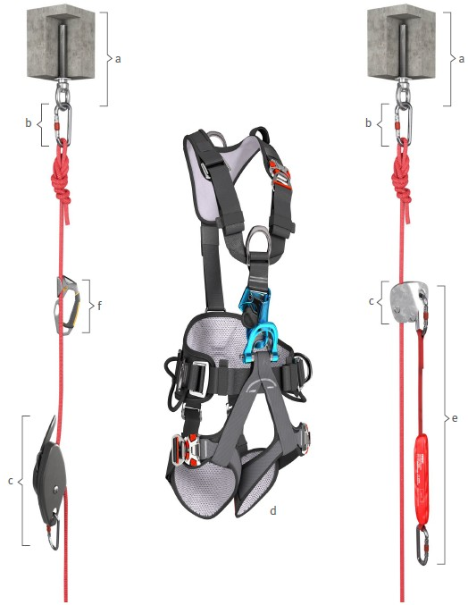
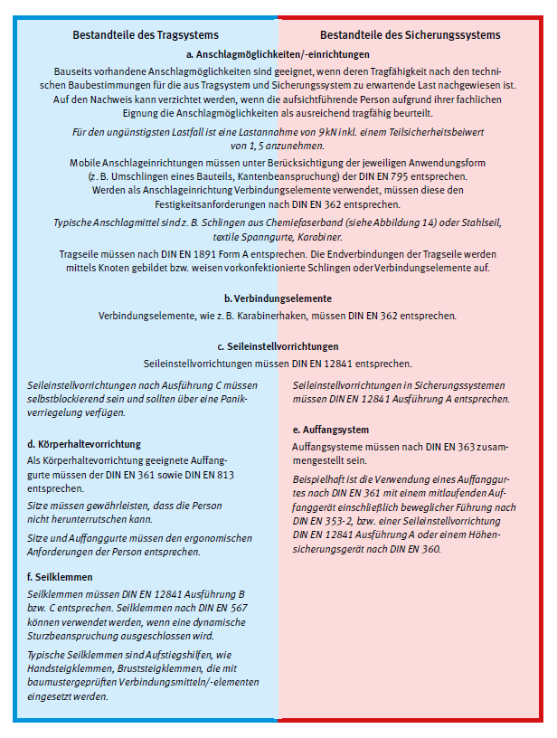
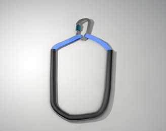

Die bei SZP verwendeten Materialien des Trag- und Sicherungssystems sowie die Zusatzausrüstung unterliegen folgenden Anforderungen.
Es sind grundsätzlich genormte und baumustergeprüfte Komponenten oder Systeme zu verwenden.
| Bestandteile des Tragsystems | Bestandteile des Sicherungssystems |

(Erläuterungen zu den einzelnen Komponenten siehe nächste Seite)

Zusatzausrüstung:
Reepschnüre
Kunstfaser-Seilschlingen (Reepschnüre) müssen DIN EN 564 oder DIN EN 1891 bzw. DIN EN 892 entsprechen.
Vorgefertigte vernähte Klemmknotenseile müssen der DIN EN 795 Typ B entsprechen. Sie sind geknoteten Reepschnüren vorzuziehen.
Rollen müssen DIN EN 12278 entsprechen. Rollen werden üblicherweise im Rettungsfall zum Anheben eines oder einer Verunfallten eingesetzt. Zur Optimierung der Wirkung können sie zu Flaschenzügen zusammengesetzt werden. Es ist vorab zu prüfen, ob die Rollen zum Einsatz in einem Flaschenzug zugelassen sind (siehe Gebrauchsanleitung des Herstellers).
Helme schützen vor Kopfverletzungen. Bei allen Helmarten ist ein 3- oder 4-Punkt-Kinnriemen erforderlich. Je nach Ergebnis der Gefährdungsbeurteilung können folgende Helmarten infrage kommen:
Arbeitsplatzbezogen können Zusatzanforderungen hinsichtlich Temperaturbeständigkeit und/oder elektrischer Isolation nach DIN EN 397 erforderlich sein.
Seilschutz an Stellen, an denen durch Umlenkung über eine Kante oder Reibung an einer Schräge ein Seil beschädigt werden könnte, muss entsprechender Seilschutz eingesetzt werden. Nach Möglichkeit ist die gefährdende Struktur zu entschärfen (Kantenblech, Rollmodul).

Abb. 14 Kantengeschütztes Anschlagmittel